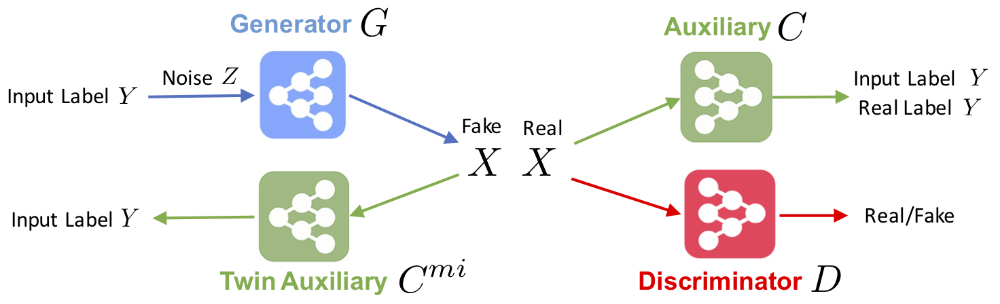
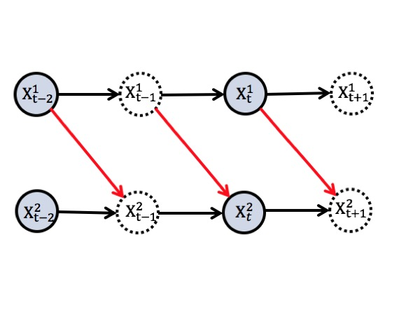
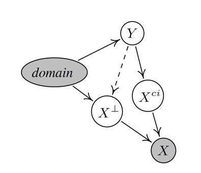
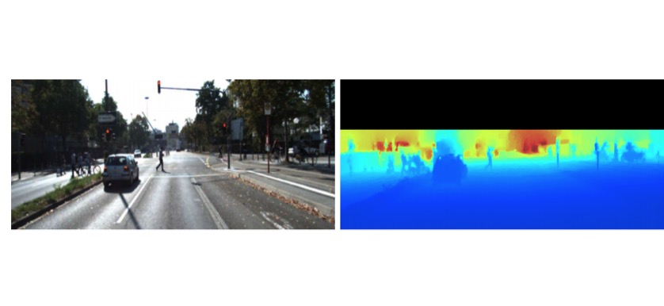
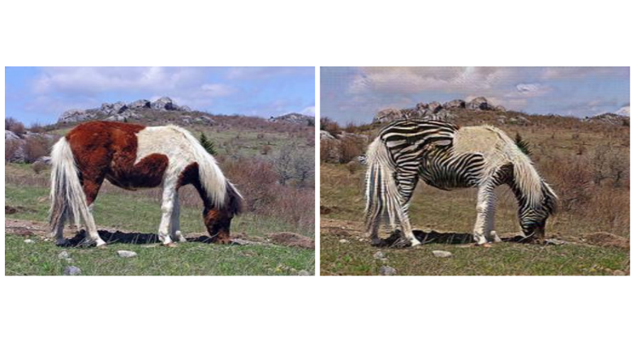

Home
I am a lecturer in Data Science at the School of Mathematics and Statistics, The University of Melbourne (UoM). Before joining UoM, I was a postdoctoral research fellow at University of Pittsburgh and Carnegie Mellon University, working with Prof Kayhan Batmanghelich and Prof Kun Zhang. I obtained my PhD from University of Technology Sydney (2012-2017), supervised by Prof Dacheng Tao and Prof Kun Zhang, M.Eng. in Communications from Huazhong Unviersity of Science and Technology, and B.Sc. in Electrical Engineering from Nanjing University. From 03/2013 - 10/2013, I was a research intern at Max-Planck Institute for Intelligent Systems (Prof Bernhard Schölkopf's lab). My research interests lie in machine learning and data science, especially in causal discovery, transfer learning, and deep learning. I study how the causal generative process of data can benefit learning in non-standard settings, such as transfer learning and weakly-supervised learning. I also develop methods to infer causal models from various kinds of observational data, including incomplete time series, noisy data, and nonstationary/heterogeneous data. On the application side, I am interested in computer vision and biomedical informatics. I am always looking for highly-motivated students to join our group. If you are interested in working with me, please send me an email about your interests and background (attaching your CV, transcripts, and any previous research papers). Thanks!
|
|  |
|
|  |
M. Gong*, K. Zhang*, B. Schölkopf, D. Tao, and P. Geiger. Discovering Temporal Causal Relations from Subsampled Data. In International Conference on Machine Learning (ICML 2015). [PDF][CODE] M. Gong, K. Zhang, B. Schölkopf, C. Glymour, and D. Tao. Causal Discovery from Temporally Aggregated Time Series. In Conference on Uncertainty in Artificial Intelligence (UAI 2017). [PDF] |
|  |
M. Gong, K. Zhang, T. Liu, D. Tao, C. Glymour, B. Schölkopf. Domain Adaptation with Conditional Transferable Components. In International Conference on Machine Learning (ICML 2016). [PDF][CODE]. |
|  |
H. Fu, M. Gong, C. Wang, K. Batmanghelich, and D. Tao. Deep Ordinal Regression Network for Monocular Depth Estimation. In IEEE Conference on Computer Vision and Pattern Recognition (CVPR 2018). [PDF][CODE]. |
|  |
H. Fu*, M. Gong*, C. Wang, K. Batmanghelich, K. Zhang and D. Tao. Geometry-Consistent Adversarial Networks for One-Sided Unsupervised Domain Mapping. In IEEE Conference on Computer Vision and Pattern Recognition (CVPR 2019). [PDF][CODE]. |